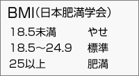
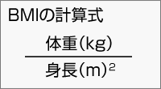

一日に必要な栄養（何をどれだけ食べたらよいか）
健康で活動的な生活を送るために必要なエネルギーや栄養素量の摂取目標が、厚生労働省から発表されている。それを「食事摂取基準」という。食事摂取基準は、年齢別、性別、身体活動別になっている。
あなたの年齢 歳 性別 男・女 ※1身体活動レベルⅠ～ⅢⅠ･Ⅱ･Ⅲ を記入してください。
あなたの食事摂取基準
エネルギー量 |
たんぱく質(ｇ) |
※２脂肪エネルギー比率％） |
ｶﾙｼｳﾑ |
鉄 |
VA |
VB1 |
VB2 |
ﾅｲｱｼﾝ |
VC |
VD |
|---|---|---|---|---|---|---|---|---|---|---|
※１．身体活動レベルは次の Ⅰ（低い）、Ⅱ（ふつう）、Ⅲ（高い）の３段階に分けられている。
- Ⅰ…生活の多くが座位で、静的な活動、机上の作業が多い。
- Ⅱ…職場内の移動や立位の作業、接客、通勤、買い物、家事、軽いスポーツなど。
- Ⅲ…移動や立位が多い。スポーツなど活発な運動習慣を持っている。
※２．脂肪エネルギー比率は、前述したエネルギーになる栄養素PFC比の中のF（脂質）の％である。その比率は、年齢と共に減少する。
これらの数値は、あくまでも標準的な目標値であり、体重や生活習慣、病歴などによって個人差が大きく変化する。
BMI（Body Mass Index）体格指数
肥満度の指標で、体重（Kg）÷身長（ｍ）２ で算出される。
あなたの体重 Kg 身長 ｃｍ を記入してください。 あなたのBMIは ． です。 生活習慣病予防に有効とされる理想体重は Kg です。
BMI２２を標準体重とし、２５以上は生活習慣病にかかりやすく、食生活と運動の改善が求められている。しかし、４０歳代のBMIと平均余命の調査・研究では、２５～３０（太り気味）の人が最も平均余命が高いという結果が得られている。
BMIは単に身長と体重の関係を示しただけで、体脂肪率等の情報は考慮されていない。したがって、メタボリック症候群の原因である内臓肥満（かくれ肥満）については、この数値には表れてこない。 BMIは単に身長と体重の関係を示しただけで、体脂肪率等の情報は考慮されていない。したがって、メタボリック症候群の原因である内臓肥満（かくれ肥満）については、この数値には表れてこない。